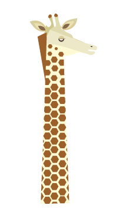

GIRAF
Vægt: 750-1500 kg.
Højde: 4-5 meter.
Levealder: 25-30 år.
Føde: Blade og friske skud.
Levested: Afrika syd for Sahara.
Sjove facts om giraffen
Giraffer er verdens højeste pattedyr!
En giraftunge kan blive op til en halv meter lang.
Giraffen spiser mere end 35 kilo blade, hver dag. Derfor bruger den også det meste af sin tid på at spise.
Giraffen har brug for et stort hjerte til at pumpe blobet rundt i kroppen. Det vejer over 10 kg.